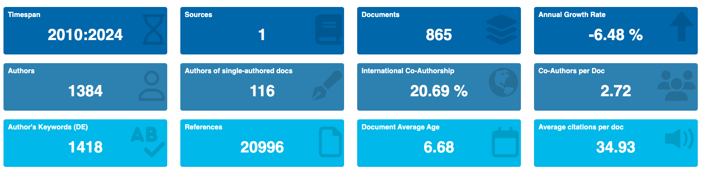
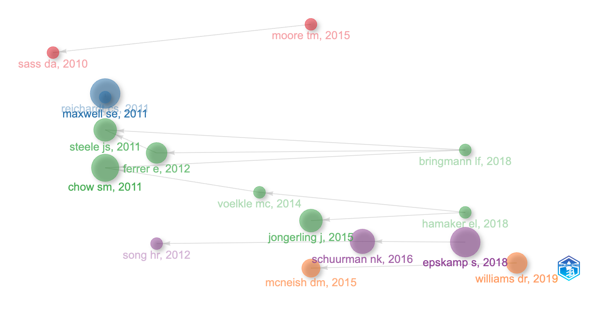

「多變量行為研究」期刊最有影響力的 20 篇文章（MultivariateBehavRes 2010-2023）
🟣 魔法史
Multivariate Behavioral Research 多變量行為研究，是 Society of Multivariate Experimental Psychology (SMEP) 多變量實驗心理學會的期刊，由 Taylor & Francis 出版。每年 6 期。
主要資訊

我們來看一下「多變量行為研究」期刊的一些有趣數據。在 2010-2023 年，這期刊共有 865 篇文章，其中合著作者平均 2.72 位。每年成長率 -6.48%，文章平均年齡 6.68 歲，每篇文章平均被引用 34.93 次。這些數字背後反映了這個領域的研究活力和影響力。

研究話題地圖
「多變量行為研究」期刊從 2010 年以來，最關鍵的 20+ 篇文章，大致呈現出 5 條主要的研究話題。以及許多單獨的重要文章。我們也提供文獻縮寫（和上圖對應），doi，以及中文翻譯名稱。文獻排序和圖上一樣，由上至下。有興趣的同學可以用 doi 去找到對應的文章。
話題 1：因素分析（紅色，比重 12.5%）
- SASS DA, 2010, DOI 10.1080/00273170903504810 探索性因素分析中旋轉標準的比較研究
- MOORE TM, 2015, DOI 10.1080/00273171.2014.973990 部分指定目標矩陣的叠代： 探索性和貝葉斯確證因子分析中的應用
話題 2：長期追蹤資料議題（藍色，比重 12.5%）
- MAXWELL SE, 2011, DOI 10.1080/00273171.2011.606716 縱向中介橫斷面分析中的偏差：自回歸模型下的部分中介和完全中介 🌟 最出圈文章！(GCS: 833) 🌟 圈內人最愛！(LCS: 15)
- REICHARDT CS, 2011, DOI 10.1080/00273171.2011.606740 評論：三波數據是否足以評估中介作用？
話題 3：密集型追蹤資料、動態結構方程式（綠色，比重 43.75%）
- STEELE JS, 2011, DOI 10.1080/00273171.2011.625305 自我調節和核心調節情感過程的潛微分方程模型
- CHOW SM, 2011, DOI 10.1080/00273171.2011.563697 具有時變參數的動態因素分析模型
- FERRER E, 2012, DOI 10.1080/00273171.2012.640605 利用個體內部和個體之間的變異模式分析情感二元互動的動態性
- VOELKLE MC, 2014, DOI 10.1080/00273171.2014.889593 為研究人與人之間和人與人之間的結構建立統一的框架： 在兩種研究範式之間架起一座橋梁
- JONGERLING J, 2015, DOI 10.1080/00273171.2014.1003772 多層次 ar(1) 模型：考慮特質分數、慣性和創新變異的個體間差異
- HAMAKER EL, 2018, DOI 10.1080/00273171.2018.1446819 密集縱向數據建模的前沿：Cogito 研究中情感測量的動態結構方程模型
- BRINGMANN LF, 2018, DOI 10.1080/00273171.2018.1439722 使用時變向量自回歸模型建模二人組中的非平穩情緒動態
話題 4：貝氏資料分析議題（紫色，比重 18.75%）
- SONG HR, 2012, DOI 10.1080/00273171.2012.640593 隨機系數動態因子模型的貝葉斯估計
- SCHUURMAN NK, 2016, DOI 10.1080/00273171.2015.1065398 多級自回歸模型中協方差矩陣的逆 Wishart 先驗規範比較
- EPSKAMP S, 2018, DOI 10.1080/00273171.2018.1454823 橫截面和時間序列數據中的高斯圖形模型 🌟 圈內人最愛！(LCS: 15)
話題 5：機器學習議題（橘色，比重 12.5%）
- MCNEISH DM, 2015, DOI 10.1080/00273171.2015.1036965 使用lasso進行預測因子選擇並緩解過度擬合： 行為科學中長期被忽視的方法
- WILLIAMS DR, 2019, DOI 10.1080/00273171.2019.1575716 關於心理網絡的非規則化估計
Citation
BibTeX citation:
@online{2024,
author = {, JT},
title = {「多變量行為研究」期刊最有影響力的 20
{篇文章（MultivariateBehavRes} 2010-2023）},
date = {2024-05-16},
langid = {en}
}
For attribution, please cite this work as:
J. (2024, May 16). 「多變量行為研究」期刊最有影響力的 20
篇文章（MultivariateBehavRes 2010-2023）.